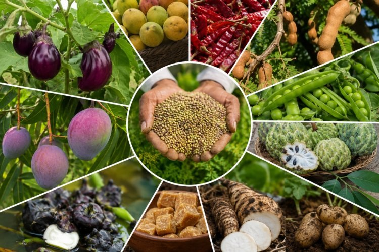
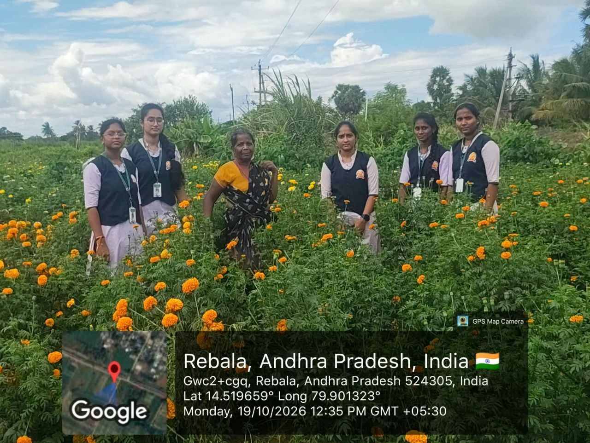
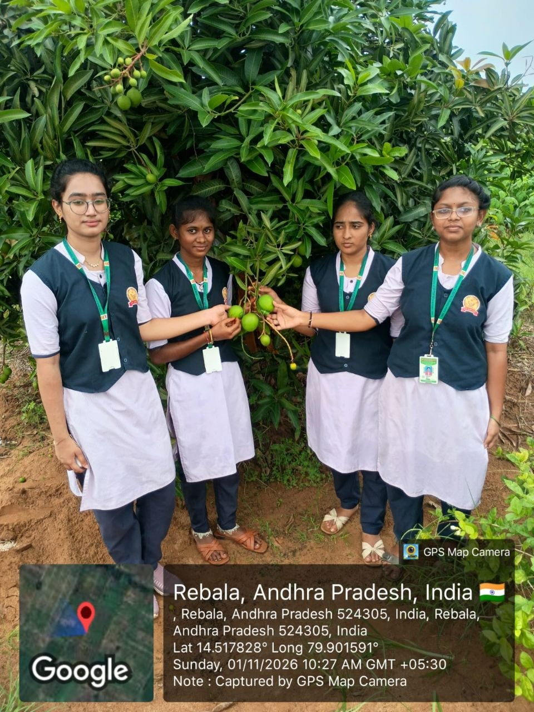
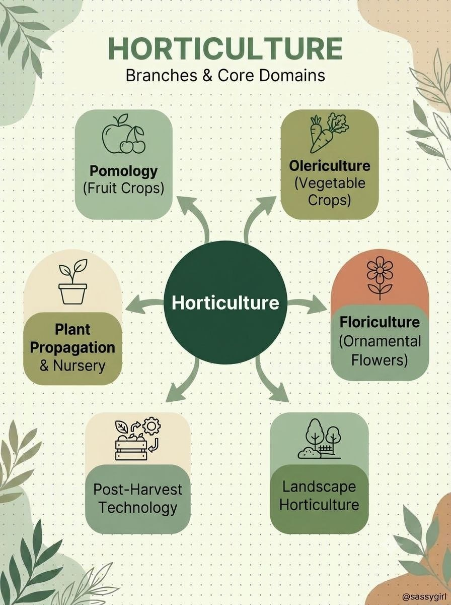
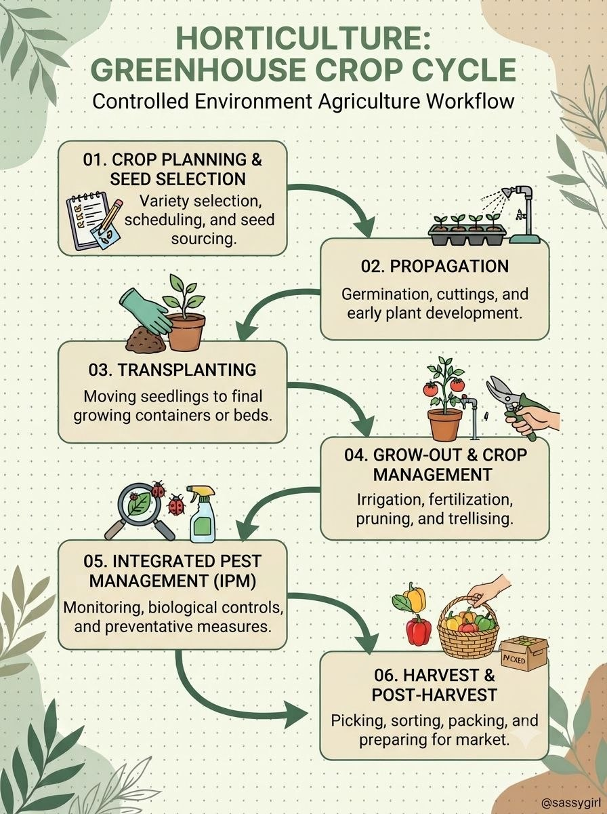
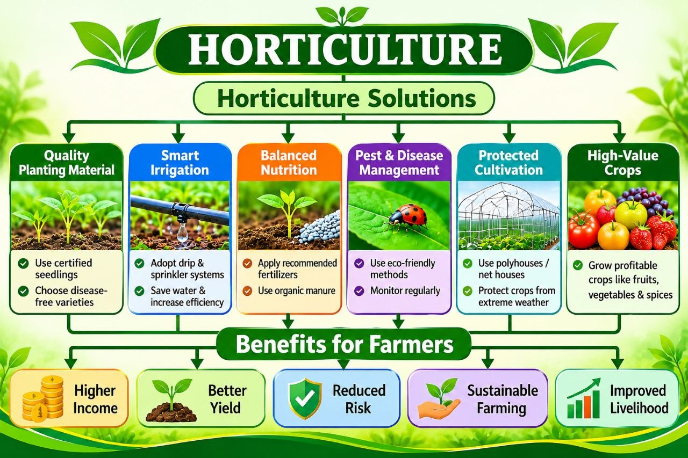
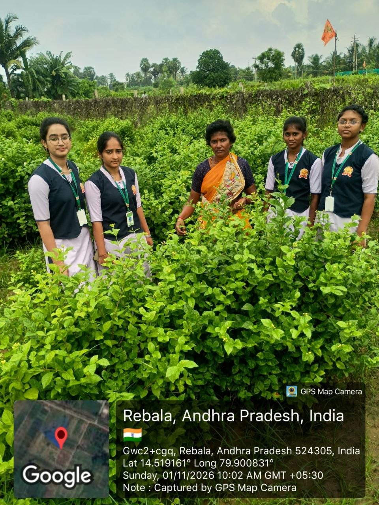
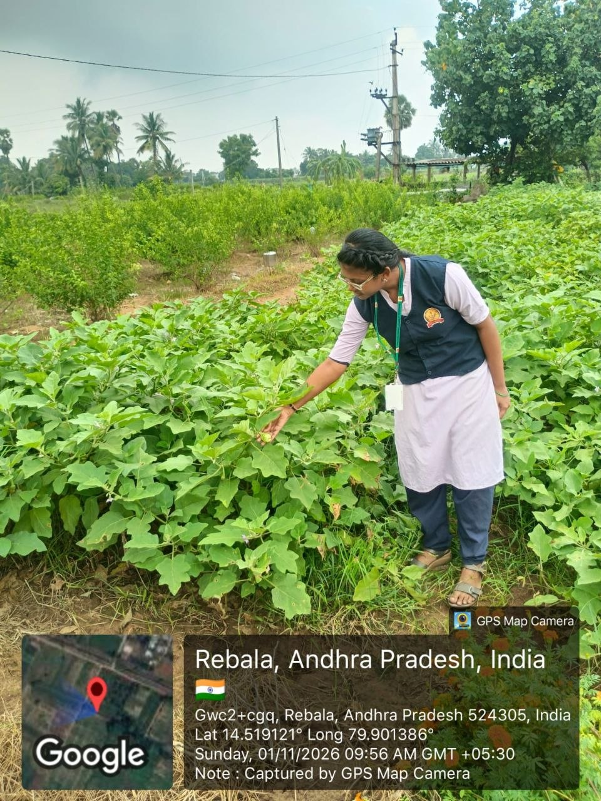
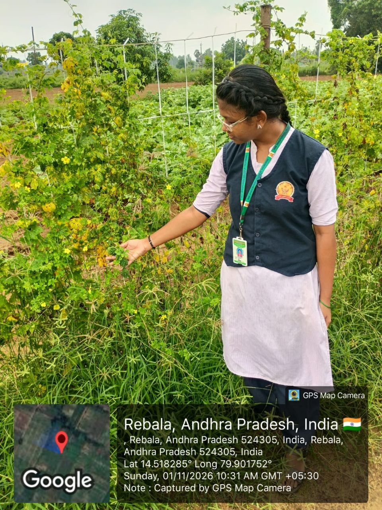
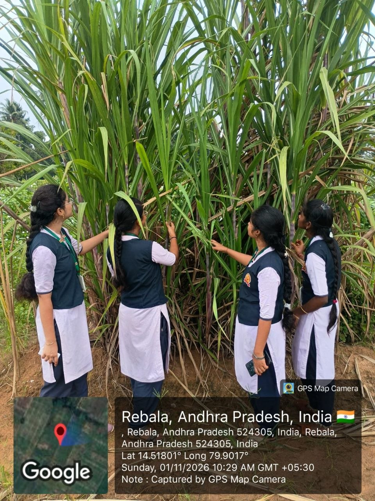

1. About Horticulture (Executive Summary)
The Horticulture industry plays a pivotal role in agriculture, encompassing the cultivation of fruits, vegetables, ornamental plants, potato and tuber crops, medicinal and aromatic crops, spices, and plantation crops. It contributes nearly 30% of the agriculture GDP and incorporates principles from botany, plant physiology, soil science, genetics, and agronomy to optimize plant growth, health, and productivity.
Horticulture contributes substantially to global food security by producing a wide range of nutritious crops, improving dietary diversity, reducing chemical pesticide usage through organic farming and permaculture, conserving water, and mitigating climate change through carbon sequestration in plant biomass. Beyond sustenance, it enhances community aesthetics, supports mental health and stress reduction, and creates rural livelihood opportunities.
Core Branches of Horticulture
- Pomology: Fruit Crops (e.g., Mango, Star Fruit, Banana, Pomegranate)
- Olericulture: Vegetable Crops (e.g., Brinjal, Chilli, Bitter Gourd, Ridge Gourd)
- Floriculture: Ornamental Flowers (e.g., Marigold, Jasmine)
- Viticulture: Grape Cultivation
- Plant Propagation & Nursery: Germination, cuttings, and quality seedling supply
- Post-Harvest Technology & Landscape Horticulture: Sorting, storage, and public green spaces

2. Overview of the Community & Service Initiative
Conducted in Rebala, Buchi Reddy Palem Mandal, Nellore District, the “Green scape Community Enhancement” initiative focuses on improving local quality of life through plant cultivation, home gardening, and green space maintenance.
Core Pillars
- Beautification: Transforming public spaces, parks, and vacant lots into aesthetically pleasing areas.
- Sustainability: Promoting eco-friendly gardening, composting, and natural fertilizers (cow dung, plant wastes).
- Education: Providing workshops, seminars, and educational resources on gardening and soil preparation.
- Community Engagement: Encouraging participation from residents, farmers, local schools, and local officials.
Key Community Activities & Benefits
- Creating community gardens in underutilized spaces and planting native trees and flowers.
- Organizing seasonal cleanup, maintenance events, and gardening workshops for all age groups.
- Improving air quality, reducing soil erosion, and conserving local biodiversity.
- Enhancing household access to fresh produce, reducing vegetable expenses, and providing horticultural therapy.
3. Explore Weekly Activity Summaries (Weeks 1–6)
Select a week or search keywords to view brief summaries of the CSP weekly activities and main learning outcomes.
4. Explore Outcomes, Identified Problems & Action Plans
Choose a category or enter a search term to explore Chapter 4 findings from the community survey.
5. Field Activities in Rebala (Buchireddypalem Mandal)
During field visits to Rebala (Lat 14.517°–14.519° N, Long 79.900°–79.902° E; Field GPS: 14.519937, 79.901546), the CSE student team interacted directly with local farmers cultivating floriculture, olericulture, and pomology crops.



6. Mini Project: Website on Horticulture (HortiCare)
Existing System (Production & Marketing Constraints)
- Traditional Cultivation & Seeds: ~90% of farmers use traditional seed varieties without soil/seed testing or hybrid disease-resistant cultivars.
- Bacterial & Fungal Diseases: Late-blight of tomato, powdery mildew in peas, and fruit fly attacks in guava and ber reduce yields.
- Marketing Intermediaries: Pre-harvest contractors, commission wholesalers, and retailers reduce farmer profit margins in Andhra Pradesh.
- Lack of Cold Storage & Processing: Perishable produce spoils quickly without cold storage or processing units (jams, jellies, sauces, squashes).
Proposed System, Requirements & Website Modules
- Proposed System: Leverages India’s diverse agro-climatic zones, dry-land crops (Mango, Coconut, Jamun, Ber, Tamarind, Wood Apple), water management, and women’s market access.
- Hardware & Software: Windows 10, 1TB HDD, Intel processor; HTML, CSS, Bootstrap.
- Modules (User & Admin Open Access): Home (activities & animations), About (day-to-day activities, pesticides, water facilities), Services (horticulture & government services), and Contact (phone, Gmail, address).
Mini Project Photo Documentation



7. Project Photos & Documentation Gallery
Click the button below to expand the documentation gallery showing field interactions with local farmers.




